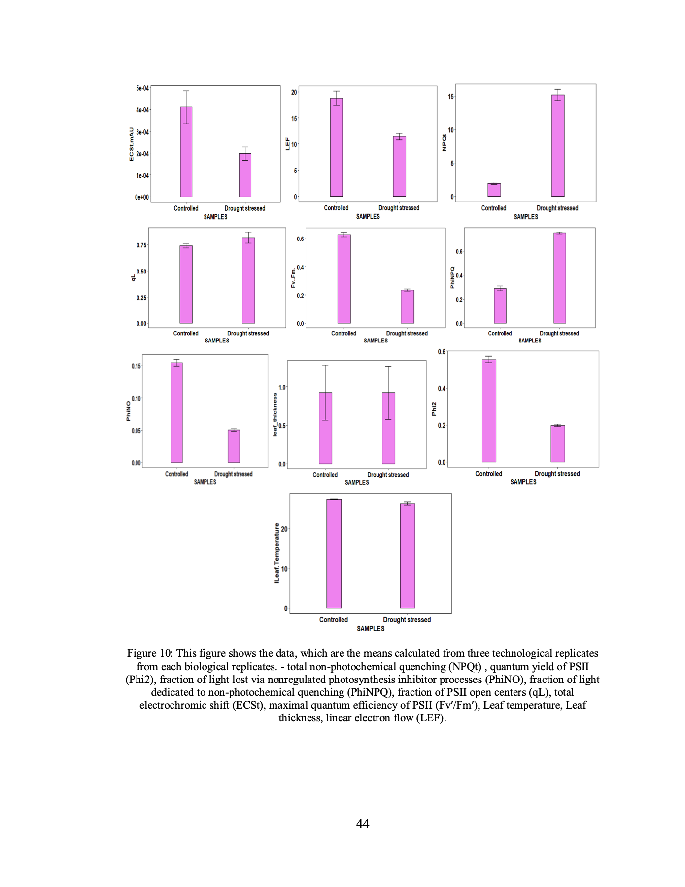
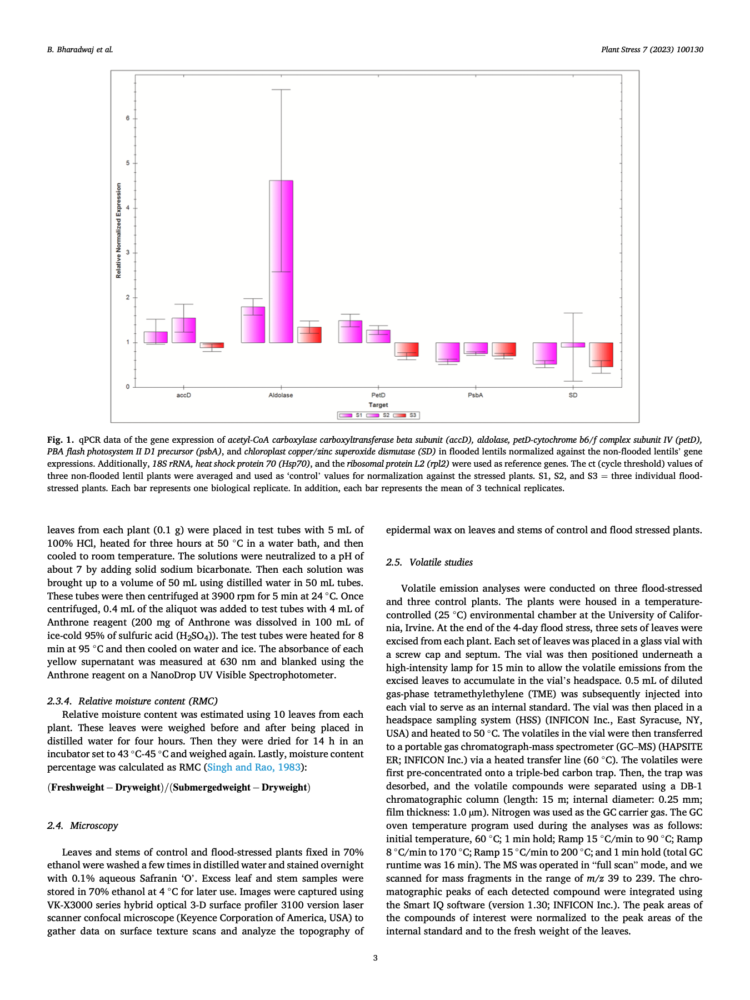
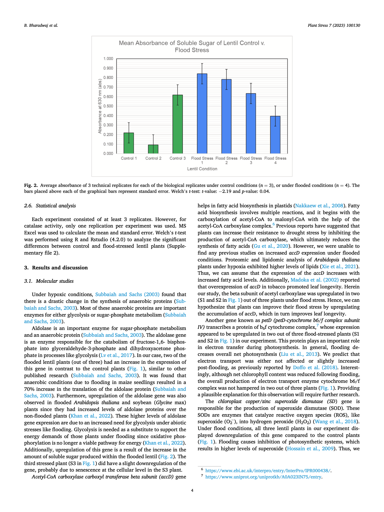
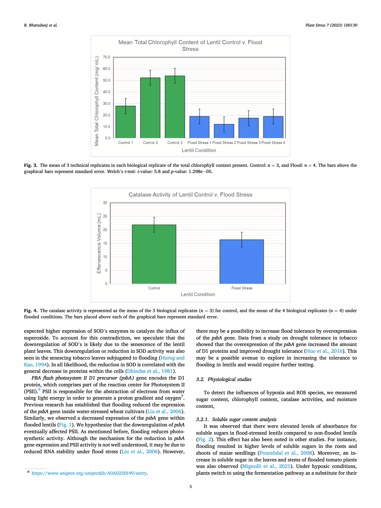
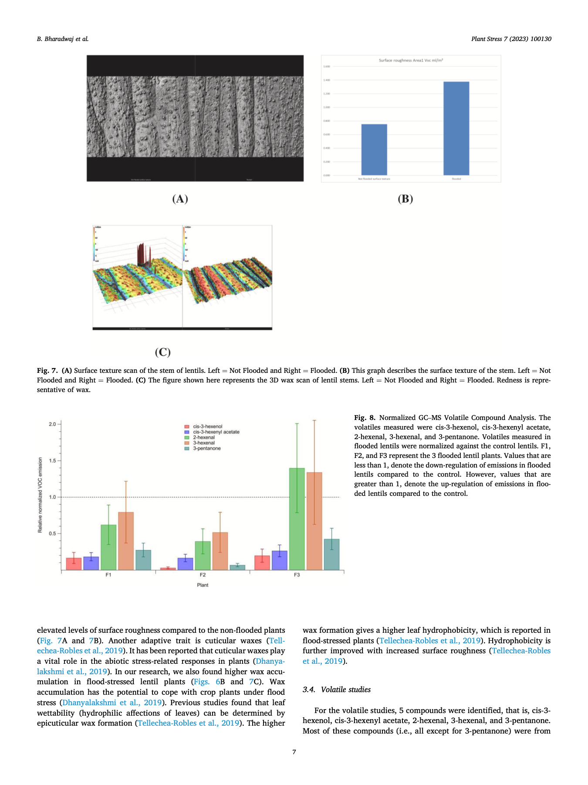
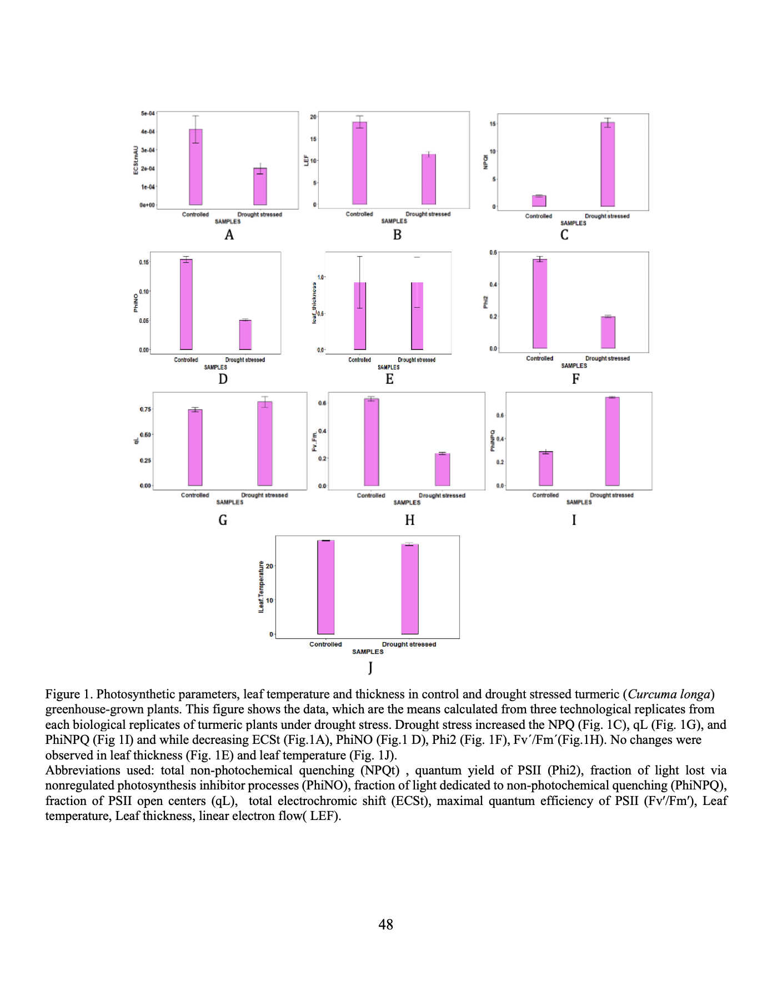
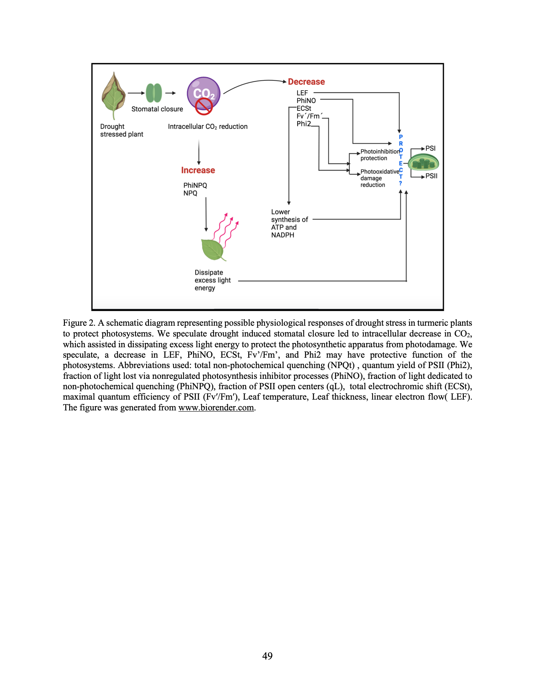
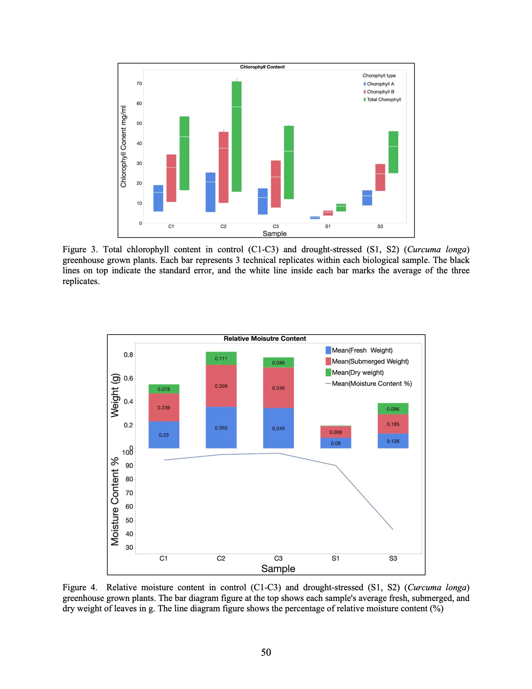
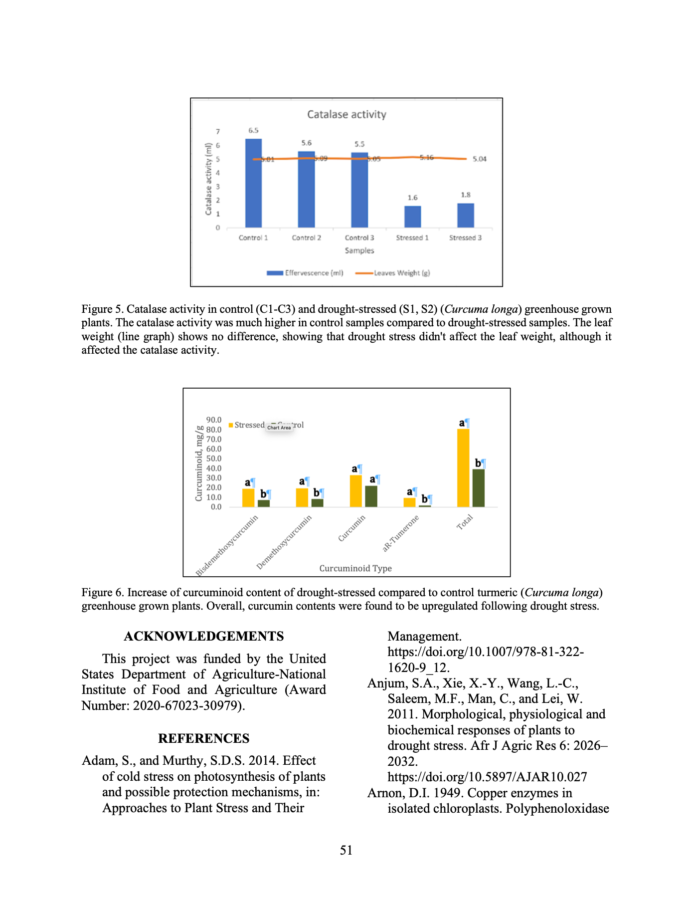

Plant molecular biology, transcriptomics, assay development
From rigorous research to precise execution, delivering real solutions.
Bhiolina Bharadwaj is a molecular biology researcher whose work spans plant stress physiology, transcriptomics, gene delivery, assay development, and high-throughput scientific workflows. This site focuses on her research projects, thesis work, publications, and the experimental rigor behind them.
Research
Thesis work on turmeric under drought stress.
01. M.S. Thesis, California State University Northridge
Towards Physiological and Transcriptomic Analysis of Turmeric (Curcuma longa L.) Under Drought Stress
Problem statement: Turmeric is highly valued medicinally and commercially, but drought stress can reduce growth and productivity while its molecular response remains poorly characterized.
Approach: Artificial drought was imposed by withholding water for 21 days, followed by physiological assays, RNA extraction, purification, cDNA library preparation, and MiSeq sequencing QC.
Findings: Drought stress reduced photosynthetic rate and chlorophyll content, supported transcriptomic hypotheses around pathway disruption, and produced a sequencing run with an average Q30 score of 86.93%.

Featured papers
Additional publication evidence and visuals.
01. Plant Stress, 2023
Physiological and genetic responses of lentil (Lens culinaris) under flood stress
Problem statement: Flood stress threatens lentil growth and productivity, but the linked molecular, anatomical, and physiological responses required integrated analysis.
Approach: Flooded lentil seedlings for four days and analyzed responses using qPCR, physiological assays, SEM morphology observations, and GC-MS volatile profiling.
Findings: Upregulated genes included accD, aldolase, and petD; flooded plants showed lower chlorophyll, catalase activity, and volatile emissions, alongside higher wax accumulation and surface roughness.




02. Journal of Medicinally Active Plants, 2024
Physiological and biochemical responses of turmeric (Curcuma longa L.) under drought stress
Problem statement: Drought harms turmeric productivity, and breeders need physiological and biochemical traits that can support drought-resilient cultivar development.
Approach: Compared control and drought-stressed turmeric plants using photosynthetic measurements, chlorophyll and catalase assays, and HPLC/DAD-MS analysis of curcuminoids and αR-turmerone.
Findings: Drought reduced chlorophyll content by 27.9% while increasing curcuminoids and stress-linked biochemical responses; bisdemethoxycurcumin, demethoxycurcumin, and αR-turmerone rose strongly in drought-stressed rhizomes.




Projects
Selected research projects beyond the thesis.
01. Graduate research
Genetic engineering of sunflower lineage for biodiesel production
Problem statement: Biofuel-oriented sunflower lines required more effective genetic engineering workflows for stable transformation and downstream screening.
Approach: Used Agrobacterium-mediated transformation, tissue culture pipelines, and DNA delivery optimization in a controlled research setting at CSUN.
Findings: The project strengthened transformation and regeneration workflows for engineered plant material and supported poster-presented graduate research output.
02. First-author publication
Physiological and genetic responses of lentil under flood stress
Problem statement: Lentil productivity can collapse under flood conditions, but the linked physiological and genetic stress responses needed clearer characterization.
Approach: Combined plant physiology, molecular interpretation, and publication-driven analysis to study flood-induced response patterns in lentil.
Findings: The work became a first-author paper in Plant Stress and framed flood stress as a measurable molecular and physiological adaptation problem.
03. Undergraduate research
Pollution effects on medicinal plants across different habitats
Problem statement: Roadside pollution changes plant health and tolerance, but comparative evidence across medicinal species and habitats was needed.
Approach: Performed morphological, physiological, and biochemical testing alongside APTI analysis for selected medicinal plants.
Findings: The study helped identify plant species and response patterns relevant to roadside pollution monitoring and management.
What I Bring
Experimental depth, translational thinking, and team enablement.
Technical depth
Bench science across molecular, cellular, and genetic workflows
DNA, RNA, mRNA, and protein isolation; PCR and qPCR; reverse transcription; Western blot; ELISA; NGS library prep; flow cytometry; mammalian and plant cell culture; microscopy; CRISPR delivery; cloning; mutagenesis; and cryopreservation assays.
Operational rigor
Quality-minded execution across research and regulated environments
Experience supporting GMP-aligned QC testing, method validation, equipment qualification support, sterility monitoring, controlled documentation, reagent qualification, and continuous process improvement.
Communication
Training, documentation, and scientific storytelling
Built customer-facing guides, delivered onsite CRISPR platform training, led academic workshops, and taught undergraduate lab classes on cell biology, recombinant DNA technology, and core molecular methods.
Publications and talks
Research output across journals and conferences.
Peer-reviewed publications
- Physiological and biochemical responses of turmeric (Curcuma longa L.) under drought stress, Journal of Medicinally Active Plants, 2024.
- Physiological and genetic responses of lentil (Lens culinaris) under flood stress, Plant Stress, 2023.
- Morphological, physiological and biochemical facets of Ricinus communis and Ficus racemosa plants grown at three different sites, Hans Shodh Sudha, 2021.
Conference presentations
- ACMAP 12th Annual Conference, 2023
- SIVB Meeting, 2022
- SIGMA XI Meeting, 2021
- National Seminar on Medicinal Plants, 2019
- Tezpur University Research Presentation, 2018
Applied research experience
Industry roles that extended the research toolkit.
QC Analyst
Miltenyi Biotec
- Executed molecular and immunological QC assays supporting cell therapy product development.
- Applied flow cytometry and gene expression analysis to verify product consistency and compliance.
- Supported method validation, troubleshooting, and equipment qualification workflows.
Senior Research Associate
Cibus Inc.
- Worked on CRISPR-based RTDS platform training, tissue culture QC checkpoints, and high-throughput systems.
- Used flow cytometry, NGS sequencers, and gene gun platforms for validation and profiling workflows.
- Created controlled documentation and handoff guides for product development and regulatory teams.
Contact